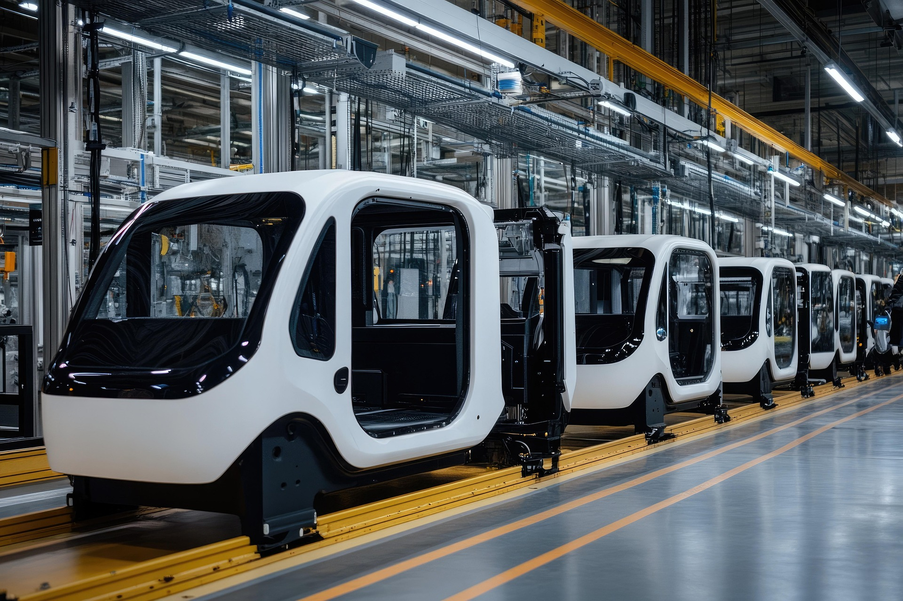
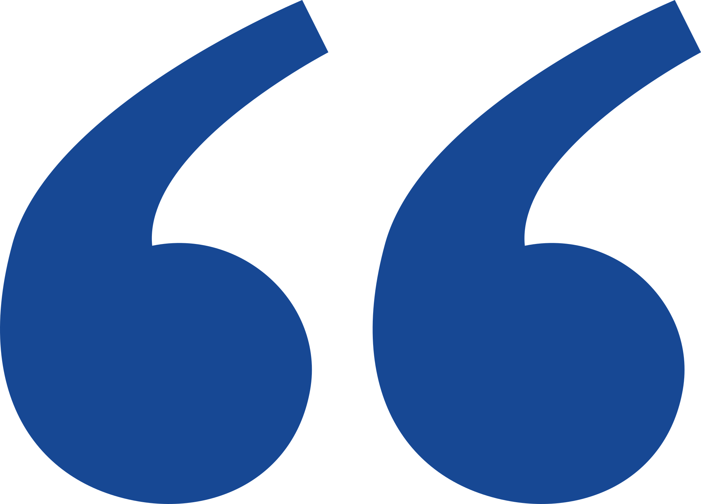
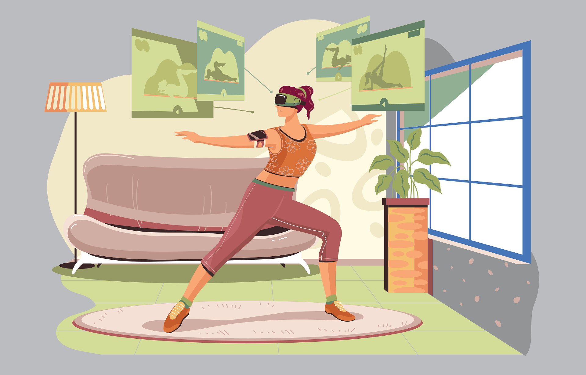

Success Stories and Client Voices
See how CSCS delivers measurable impact and what our clients say about the difference we made.
Industry: Autonomous VehicleClient A (Under NDA) - Facing uncharted territory in UK autonomous vehicle regulations, a leading Chinese manufacturer engaged CSCS in 2024 for comprehensive market entry analysis. Our five-month intensive study delivered a 70-page regulatory blueprint covering policy frameworks, testing certification requirements, approved operational zones, and competitor positioning. Beyond documentation, we mapped testing facilities across three UK regions and initiated introductions to potential launch partners. This foundational work created a strategic roadmap enabling informed investment decisions for their UK expansion initiative.
"UK is a promising market for autonomous vehicle, but right now the regulations are a bit of a maze. CSCS cut through the complexity with a rock-solid market entry report - from decoding policies and road testing protocols to sizing up opportunities and connecting us with potential partners. This wasn't just paperwork; it empowered our entire market strategy."
Industry: LogisticsClient B (Under NDA) - When this Hong Kong-based logistics provider sought to expand its warehousing, fulfilment and freight services into European markets, CSCS provided localised market intelligence and strategic networking from 2021 onward. Leveraging our extensive industry connections and business development expertise, we facilitated the Client's acquisition of long-term contracts with a major consumer electronic brand requiring integrated UK/EU warehousing solutions and dedicated ocean freight capacity. Our advisory services transformed their value proposition for European clients, resulting in a 40% increase in regional contract value within 18 months of engagement.
"CSCS illuminated our European blind spot. Their expertise turned 40% growth into reality - this isn't just revenue, it's a fundamental value proposition upgrade."
Industry: Social EcommerceClient C (Under NDA) - For a Hangzhou-based social commerce leader establishing its UK subsidiary, CSCS delivered turnkey incorporation services. Beyond standard company registration, we navigated complex financial compliance requirements to secure business banking facilities, applied for employer sponsorship licensing for international talent recruitment, and obtained import authorisation for China-UK cross-border ecommerce. Crucially, we integrated specialised legal and accounting partners aligned with their corporate structure, enabling full operational readiness within 11 weeks - 30% faster than industry benchmarks for comparable market entries. We also arranged for this client to participate in IRX, the UK's largest e-commerce exhibition, where they gained valuable industry insights and generated numerous business leads.
"Thanks to CSCS, we hit the ground running with our UK social commerce play months ahead of schedule."
Industry: Blockchain TechnologyClient D (Under NDA) - When a London-based Web3 software firm considered venturing into hardware with a blockchain-integrated smartphone in 2023, CSCS conducted a six-month feasibility analysis. Our multidisciplinary team evaluated technical implementation hurdles, conducted competitor tear-downs, modelled unit economics, and projected adoption curves across three market scenarios. The conclusive recommendation to maintain software focus - supported by ROI projections - prevented an estimated £7.2M capital exposure while strengthening their core platform development roadmap.
"We stepped back from a £7.2m smart phone R&D investment - avoiding significant potential losses. CSCS's robust data analysis reinforced the commitment to our core business - Web3.0 software ecosystem, preventing an ill-advised focus diversion."
Industry: Cross-border EcommerceClient E (Under NDA) - For this London-headquartered consumer electronics manufacturer, CSCS has delivered continuous logistics consulting services since 2016. We established and managed their UK import operations while creating an integrated logistics framework connecting Chinese manufacturing to European distribution. Our solution encompassed factory dispatch coordination, multimodal transport management (sea/air), port clearance operations, UK warehousing and last-mile deliveries into distributors and retailers. This end-to-end visibility eliminated operational silos, allowing seamless synchronisation between the Client's commercial activities in European markets and production ecosystems in the China - reducing transit variability by 28% while improving inventory forecasting accuracy.
"Working with CSCS couldn't be simpler. They possessed a deep understanding of our operational models and the challenges we faced, provided us with stable, long-term supply chain management and logistics optimisation services. This enabled us to concentrate fully on our core business and product development."
 Industry: Technological Innovation
Industry: Technological InnovationClient F (Under NDA) - As a London-based pioneer in compact pressure forming technology serving dental, education, and creative sectors, the Client faced critical supply chain challenges during its growth phase. Since 2018, CSCS has implemented comprehensive supply chain optimisation including OEM management restructuring and global logistics network redesign. Our intervention reduced core product lead times by 44%, accelerating cash flow cycles while decreasing inventory overhead by 32%. This operational transformation enabled the Client to respond to market demands with unprecedented agility, turning supply chain management into a competitive advantage that supported their international expansion.
"CSCS transformed our supply chain from a bottleneck to an engine. "
Industry: Wearable TechnologyClient G (Under NDA) - A London health-tech startup developing AI-powered nutritional wearables enlisted CSCS during critical R&D phases. Our supply chain specialists embedded within their product development team, advising on design-for-manufacturing principles, material sustainability trade-offs, and OEM partner selection across four Chinese manufacturers. By implementing concurrent engineering methodologies and supplier qualification protocols, we compressed the production timeline by 14 weeks while reducing projected unit costs by 19% - enabling on-schedule market entry with optimised margins.
"CSCS's supply chain optimisation compressed our order-to-delivery lead time and reduced COGS, creating a decisive competitive advantage from product launch."